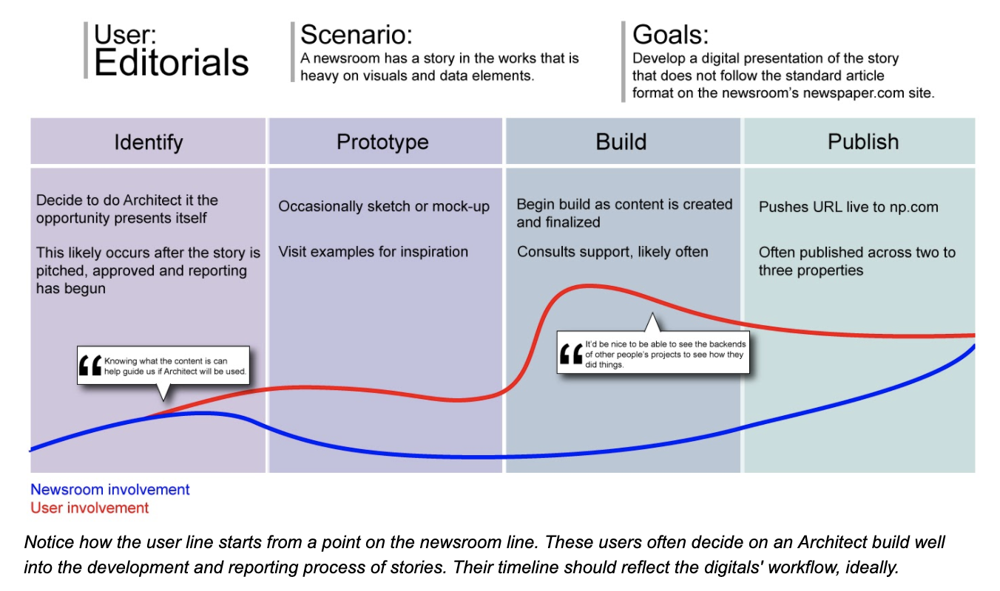

Architect was one of my first projects when I joined what was then called de//space, the innovation team at Gatehouse Media.
My job was to redesign and rebuild the longform storytelling platform, iterating on the first version that was a finalist in APME's innovator of the year award in 2018. I started by interviewing several reporters and editors who had been power users of the first version, documenting pain-points, user's wishlists and how each newsroom's workflows affected the projects they'd create.
One advantage to the rebuild was moving the platform to Wordpress' then-newly released Gutenberg editor. By updating the creator-side interface to the new page and post builder, a mojority of the users' workflow issues were resolved (i.e., wanting the page editor to better reflect the front end and having prebuilt components for a variety of content).
Below is a user journey diagram of the "editorials" persona, users who build projects in the platform but are not digital producers or designers.
This project set the tone for much of my work at Gannett, where I not only have to design and develop products for a variety of teams and users, but I have to consider how those users create their own sites and content using those platforms.
Gatehouse and, post-merger, Gannett newsrooms produced dozens of stories with the rebuilt platform before it was sunset in 2021.
Here are some of my favorite projects our users created: